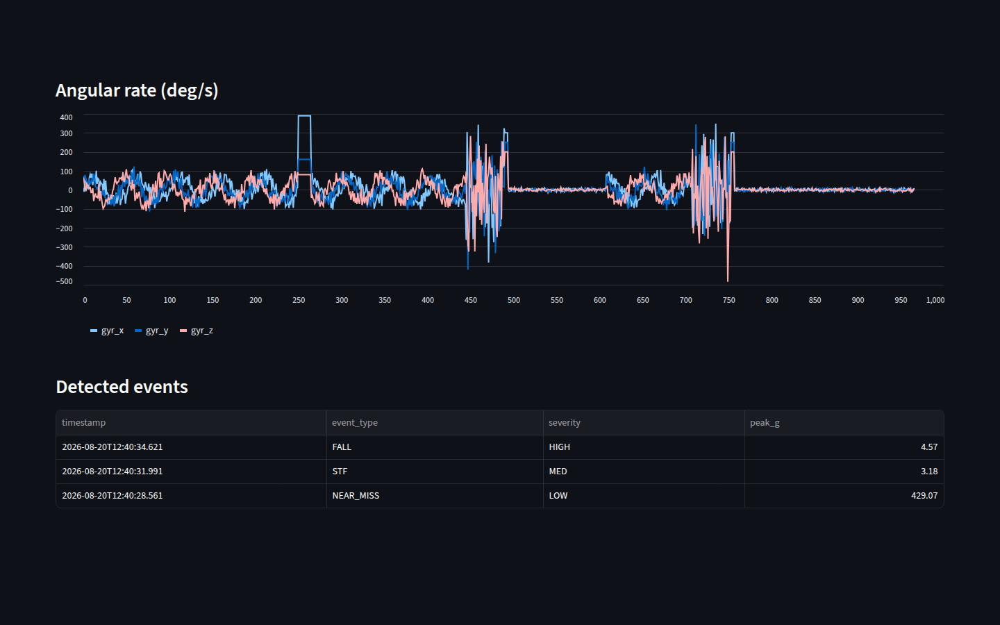

1Project Scope & Problem
Construction sites are among the most dangerous places to work in Singapore. In the Ministry of Manpower's 2025 national workplace safety statistics, construction was the top sector for workplace deaths with 13 fatalities; falls from height stayed among the top three causes of death, and slips, trips and falls caused the most major injuries — roughly 39% of them. The Workplace Safety and Health Institute posed this exact challenge on IMDA's Open Innovation Platform, which is where our project brief came from.
The practical gap is supervision. A supervisor cannot watch every worker across a large site at once, and a fall can happen and end in seconds. Worse, near misses — a worker stumbling but catching themselves — are early warnings of unsafe conditions, yet they usually go unreported because nothing visibly happened. Existing systems catch only severe falls; the warning signs before them are lost.
Our scope: build a working prototype that continuously monitors a worker's movement with a wearable sensor, automatically detects falls, slip-trip-falls (STF) and near misses, stores everything for later review, and surfaces live alerts a supervisor can act on.
2My Role & Solution
This was a four-person team project. I focused on the data engineering core: receiving the Bluetooth sensor stream in Python, validating and storing the readings, designing the fall-detection state machine, and wiring the results into the live dashboard my teammates and I used for the demo.
The worker carries an Arduino Nesso N1, whose built-in IMU measures three-axis acceleration and three-axis rotation 100 times per second. The readings stream over Bluetooth Low Energy to a site computer, where a Python application validates each packet, computes movement features, runs the detection logic, and writes everything to a database. A Streamlit dashboard reads from the same database and shows live sensor trends, event history and active alerts.
3Work Process
Collect and validate. Every BLE packet is decoded and checked before it is trusted: it must contain exactly six numeric values, and each reading must sit inside the physical limits of the BMI270 sensor (±16 g acceleration, ±2000°/s rotation). Malformed or out-of-range packets are counted and rejected rather than stored, so corrupted data can never reach the detector.
Store. Clean readings are timestamped and written
to a relational database — MariaDB in the main build, with SQLite as a drop-in fallback — in
batches of 100 (about once per second) to keep up with the 100 Hz stream. Three tables mirror
the pipeline: imu_readings for raw samples,
imu_features for processed values such as acceleration
magnitude, and events for detected incidents with
severity and peak value.
Detect. Rather than checking axes separately, the detector works on overall acceleration and rotation magnitudes. A genuine fall has a three-phase signature: a free-fall dip (below 0.7 g), an impact spike (above 1.8 g) within 1.5 seconds, then unusual stillness — the person on the ground. A big rotational lurch that is not followed by stillness is classified as a near miss: the scary stumble a worker recovers from. Severity is graded from the peak impact force.
Tune against ground truth. We staged safe test events — controlled drops, stumbles and recoveries — and wrote down the exact time of each. Replaying the stored data through the offline processor, we compared detections against our notes and adjusted the thresholds between runs: the impact threshold came down from 2.5 g to 1.8 g so that real falls trigger reliably, the free-fall threshold relaxed to 0.7 g, and the near-miss rotation threshold was raised to stop normal walking from raising false alarms.
4Outcome & Results
The finished prototype does the whole job: it collected live accelerometer and gyroscope data over BLE, kept the database clean at 100 samples per second, and generated FALL, STF and NEAR_MISS events from different movement patterns in our controlled tests — each with a timestamp, severity grade and peak reading a supervisor can review afterwards.


We were equally deliberate about limitations: fixed thresholds may need adjustment for different workers and movements, and controlled testing cannot cover everything that happens on a real site, so measuring false-positive and false-negative rates in the field is the obvious next step. The design scales cheaply — one low-cost wearable per worker, free open-source software, and an events table already keyed by device name, so adding workers needs no pipeline changes. Planned enhancements include on-device edge detection (alerts even with zero connectivity) and push notifications to a supervisor's phone across a whole fleet.